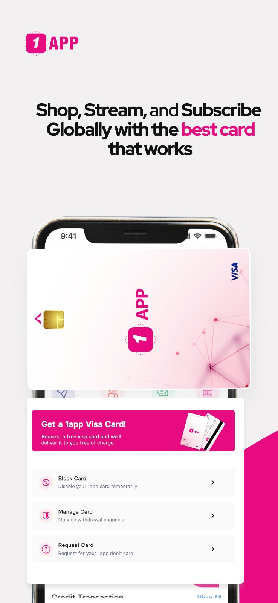
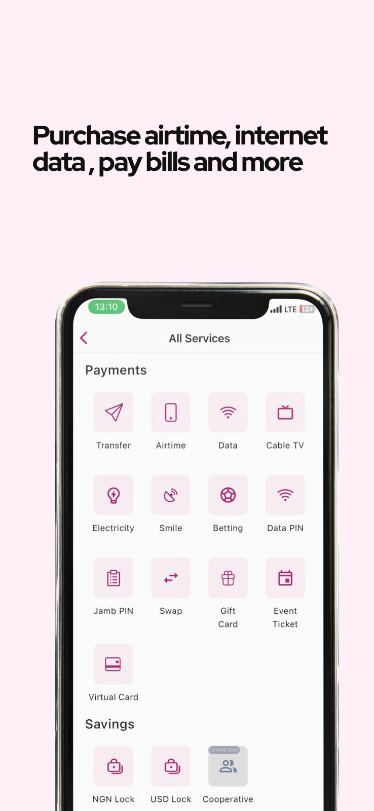
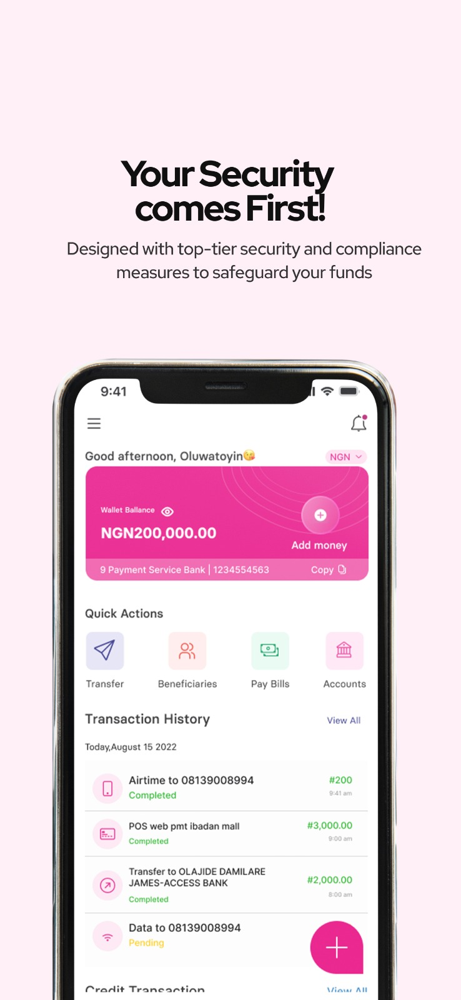

我用了一周1app：一个把海外收钱和国内花钱捏在一起的金融App
做跨境接单的尼日利亚朋友给我推荐的，装了一周发现它真把「美元进来、奈拉出去」这条管道打通了——但也有几个地方说实话让我有点抓狂。
前阵子帮一个尼日利亚的自由职业者朋友调试网站，聊到他每个月从 Upwork 接活赚的美元怎么转回国内花，他给我甩了个应用安装包，说「你试试这个，比银行电汇省事多了」。后来我去1app下载也找到了APK，它的1app官网上定位就写得很清楚——这是个把海外收钱和国内花钱捏在一起的金融App。我本来以为又是那种非洲小团队做的粗糙工具，装完打开的第一反应却是：哦，这居然真能用。
第一眼：界面挺干净，但注册流程有点意思
装完打开的登录页没什么花里胡哨的东西，手机号加验证码就能进。但进去之后的身份认证环节，是我见过最「接地气」的做法——要拍身份证或者护照，还要录一段念验证码的视频。说实话我一开始以为这是因为尼日利亚金融监管严，但后来翻了一下才明白，这套流程其实是为了防洗钱和多账号滥用。挺严格，但走一遍大概三分钟就过了，没卡我。
进去之后的主界面就是一个钱包余额卡片，下面五个大按钮：收款、汇款、换汇、账单代缴、储蓄。底部还有个「更多」tab 藏着一些次要功能。整个导航逻辑很直白，不像某些金融App把功能堆得满屏都是让人找不到北。

核心体验：我真的用它收了一笔钱、交了一次话费
光看界面没感觉，真金白银走一遍才知道好不好用。
全球收款：Upwork的美元直接进来
朋友演示给我看的操作是这样的：在收款功能里选美国账户，系统会即时生成一个专属的ACH路由号和账户号——就像一个真正的美国本地银行账户。他把这个填到 Upwork 的收款方式里，三天后那笔劳务费就进来了，到账的是美元余额。
说实话我没想到这步能这么顺。之前听他说过用 Payoneer 之类的平台，中间要等好几天还要收一笔结汇费，1app 这边到账速度至少快了一倍。唯一让我有点在意的是，它的美元账户不是真的给你开了一个美国银行实体账户，而是走它合作的银行通道——对用户来说体验一样，但如果哪天它的通道出问题，收款就会受影响。不过目前为止一切正常。
换汇和账单：奈拉花起来比想象中方便
美元到了之后，我试着换了一点奈拉。汇率是实时显示的，换之前能看到到账多少奈拉、手续费多少，没有隐藏费用。换完直接在钱包里就有奈拉余额了。
然后我用这个奈拉余额交了一笔当地运营商的话费——选运营商、输入号码、确认金额，不到十秒就到账了。朋友说电费、有线电视、考试PIN这些都能交，甚至还有体育博彩的代缴入口。一个金融App把博彩代缴也做进去了，这在我之前用过的任何应用里都没见过，挺尼日利亚特色的。

锁仓储蓄：强制攒钱的那个功能
我试了一下 NGN Lock 锁仓。把一笔奈拉锁进去，选了一个三个月的期限——锁仓期间这笔钱动不了，到期自动回钱包。朋友说这功能是给他那种「钱包里有钱就忍不住花」的人设计的，叫 Safelock。
我选了三个月主要是想看看到期会不会有收益，不过产品页没写清楚具体收益数字，只说「以实际显示为准」。这点让我有点不爽——你一个储蓄功能，不提前说清楚能赚多少？后来去翻了一下1app文档才搞清楚提前支取的那堆规则，不过转念一想，锁仓本来就不是投资，它的价值在「纪律」，帮你把钱攥住不花掉。这么想就通了。
虚拟卡和加密通道：两个我暂时没用到但觉得挺有意思的功能
它还能开一张虚拟美元卡，即时生成卡号、有效期和CVV，能用来订阅流媒体、交学费、买广告位。这不就是一个可以在线消费的美元账户吗？对需要给海外服务付费的人来说挺实用的，省得每次都换汇再找支付渠道。
还有加密货币充值，支持 USDT、USDC、BTC 充进来换成法币。这块我没敢动——尼日利亚的加密监管最近有点摇摆，我不想给自己找麻烦。但朋友说他有时候会用 USDT 充值再走储蓄，比银行通道快。

哪些人适合用
做跨境接单的尼日利亚自由职业者、需要给海外付费的中小企业、想强制攒点钱的普通人——这三类人应该是它最核心的用户群体。说实话如果你只是在尼日利亚国内收发奈拉，那本地钱包选项多了去了，这个应用重的是「全球」和「法币加密互通」这两条通道。
一周下来的小吐槽
说实话，还是有几个地方让我觉得不太对劲。
第一，换汇的汇率点差比银行稍高一点，虽然透明但累积起来也是成本。第二，国际转账到账速度要看目的国，朋友说往欧洲汇偶尔要等两天，往美国就快。第三，应用内的帮助文档质量一般，有些功能说明写得太简略，比如锁仓的提前支取规则我找了好半天才在一个角落看到。
但话说回来，一个功能这么全的金融工具，下载量还在二十万级别，能做到基本功能稳定、到账速度快、费率透明，已经比我预期的好太多了。它不是完美的，但它解决的那个痛点真的存在——海外美元进来、国内奈拉出去，中间的汇率、支付、储蓄，这一整条管道能在一个App里走完，本身就是价值。
如果你刚好是那种需要同时处理跨境收入和本地支付的尼日利亚用户，或者身边有这样的朋友，值得装一个试试。至少比去银行开一堆账户、填一堆表单强。
这款应用的资料包我整理过一份中文版本放开源仓库了，GitHub、Gitee 和 GitCode 上都能搜到对应的目录，搜应用名就能找到。